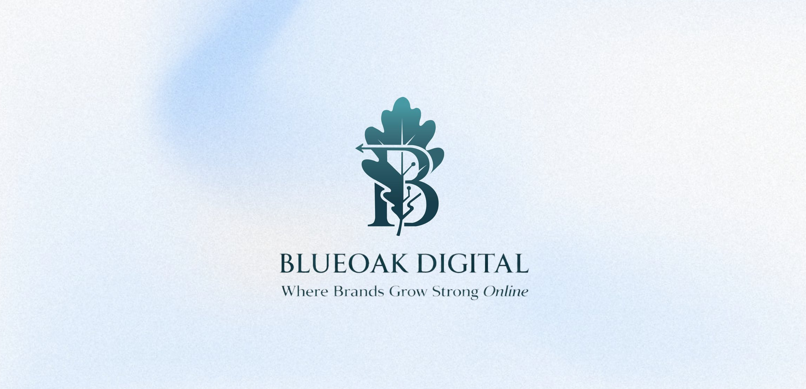

All projects
BlueOak Digital — Motion Graphics
Motion graphics and short-form video content for BlueOak Digital — brand animation, a logo reveal, and social-ready video built in After Effects and Premiere Pro.

Motion built to help a digital-growth brand feel as dynamic as its name.
BlueOak Digital needed motion content that could carry its brand — the oak-leaf mark and deep teal-and-cream palette — across social and marketing formats. The work spans a brand animation piece, a dedicated logo reveal, and short-form video built for both landscape and vertical placements.
Everything was built in After Effects and edited in Premiere Pro, aimed at content that performs natively on social platforms rather than feeling like a repurposed ad.